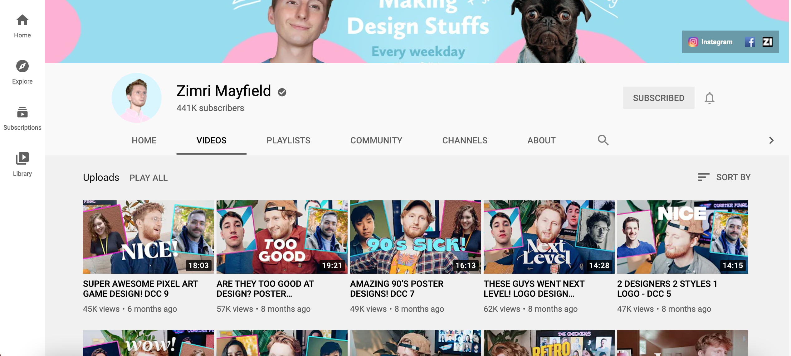

This was my attempt to create more inclusive Default Interactions. Many default interactions can isolate and hurt people's identities, and so they need to be changed to be more inclusvie.
408 Visual Diary
by Stephen Darling
Default Interactions


Green Valley Ideas


This was my attempt to create some ideas for the Green Valley Auctions application based on the original kickoff meeting with Greg and Elizabeth.
Independent Audiences
These are two Personas I created to help understand Green Valley Auctions' audience. With these personas, I was able to pinpoint exactly who I was preparing the application for.
Independent Skills


These are notes for the technical skills and tutorials that I researched for my Independent Project.
Courses
User Experience for Web Design primarily helped me understand the things people feel and see when they enter a website, and it helped me accommodate the users of my application. Figma for UX Design helped me learn Figma, and use it for the project. UX Research Methods: Interviewing helped me understand my users, and it helped me think about the kinds of questions my users would ask.
Zimri Mayfield
His videos helped inspire me to create interesting and effective designs.
DesignCourse
This helped me hone in my skills as a UI Designer.
All of these lessons/tutorials really helped me know exactly what I wanted to design before I even created the project in Figma.
More Inclusive Designs


This was my attempt at creating more inclusive designs based on our conversation of the book, Technically Wrong. This book aimed at helped the reader understand how small, yet important designs can be exclusive to some.
My designs included, a genderless persona, more options for race and ethinicity identifications for sign up forms, and a better way to accomodate users with multiple names.
Normal People

My sketches have to do with differentiating validated news from user generated news on Twitter. With validated news or breaking news, there would be a star next to the Twitter moment. This would let the user immediately know that the news story has been talked about by news stations. Upon clicking on the Star icon, the user will be presented with only Tweets/reports by certified news outlets. Additionally, every news page would show up allowing the user to try to see bias more clearly. Finally, there could even be a tab that would show where news channels' biases' typically align. That way, the user can try to get a number of opinions and they can form their own opinion. Finally, there is another icon, an X (could be changed to something else) that shows the user that whatever hashtag is trending is user generated. Many times online trolls try to stir up fake news about celebrities (I'm looking at you kpop stans), and it would be helpful for users to know whether something was supported by news media or not.
Notifications

This is my attempt to create a way to keep notifications under control and to not let them rule our lives.
Tech Skills

This is a sketch of what I wanted to accomplish for my Independent Project and how I was to get there.
Courses
User Experience for Web Design primarily helped me understand the things people feel and see when they enter a website, and it helped me accommodate the users of my application. Figma for UX Design helped me learn Figma, and use it for the project. UX Research Methods: Interviewing helped me understand my users, and it helped me think about the kinds of questions my users would ask.